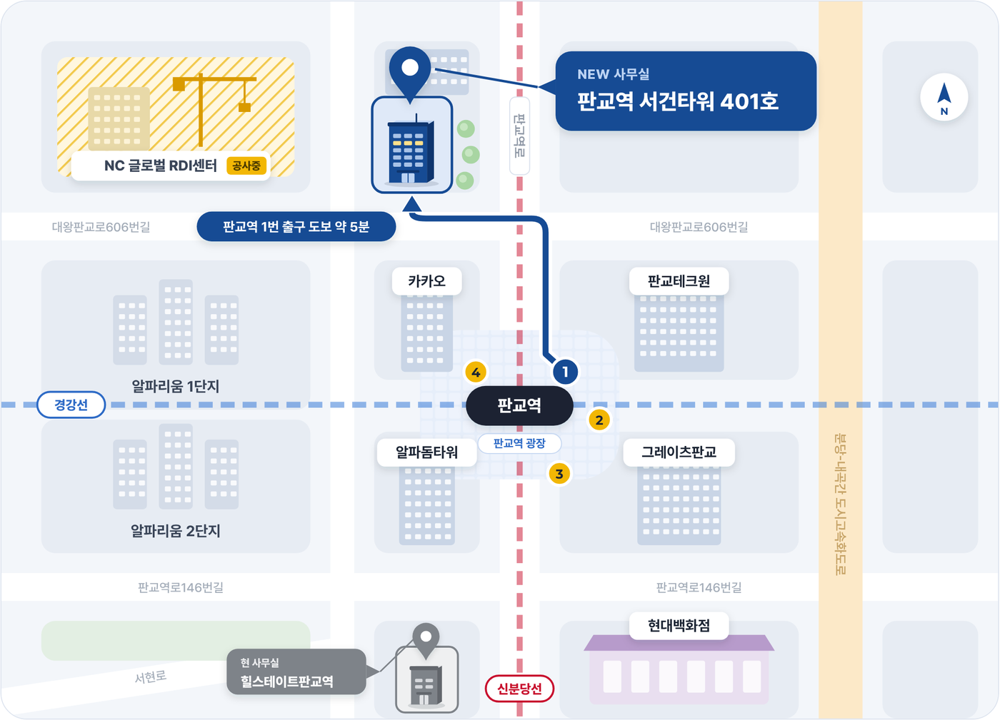

오시는 길
판교역 1번 출구에서 236m, 서건타워 4층입니다.
연락처
- 주소
- 경기도 성남시 분당구 판교역로 178, 서건타워 401호
우편번호 13524, 판교역 1번 출구에서 236m - 팩스
- 031-8023-9871
찾아오는 방법
- 지하철
- 신분당선·경강선 판교역 1번 출구로 나와 직진합니다. 판교역 광장을 지나 횡단보도를 건넌 뒤 왼쪽으로 조금 걸으면 모퉁이에 있는 건물이 서건타워입니다. 1층에 판교집, 2층에 하나은행이 있습니다.
- 주차
- 서건타워 바로 오른쪽 옆 건물인 호반메트로큐브 오피스텔(대왕판교로606번길 31)에 주차하신 뒤 걸어서 1분입니다. 방문하시면 주차를 지원해 드립니다.
약도
2026년 11월 2일에 힐스테이트판교역에서 서건타워로 사무실을 옮겼습니다.
